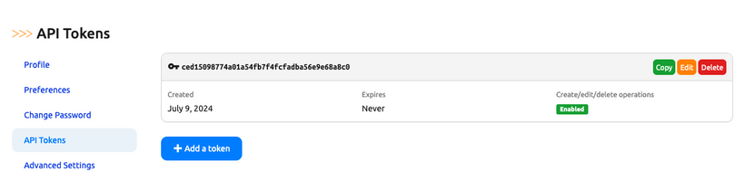
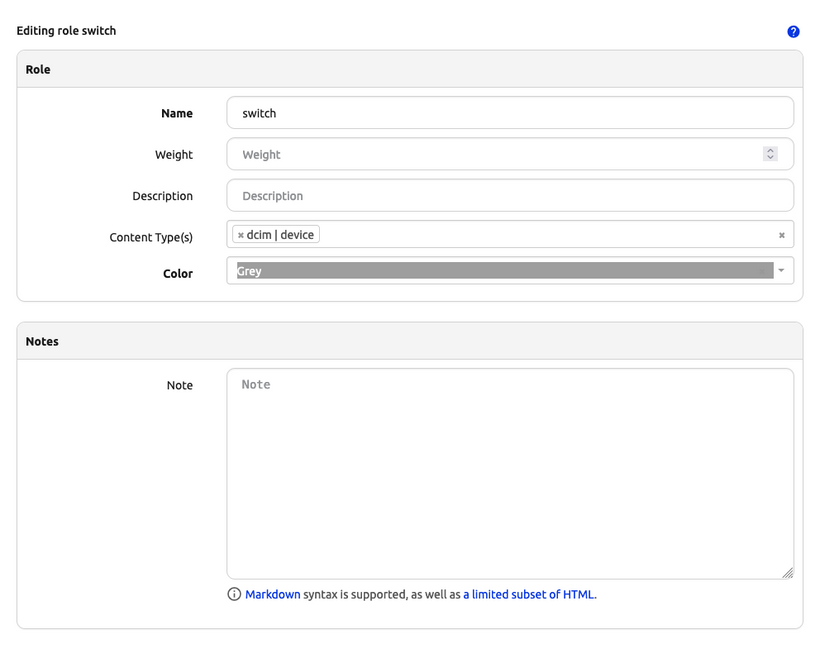
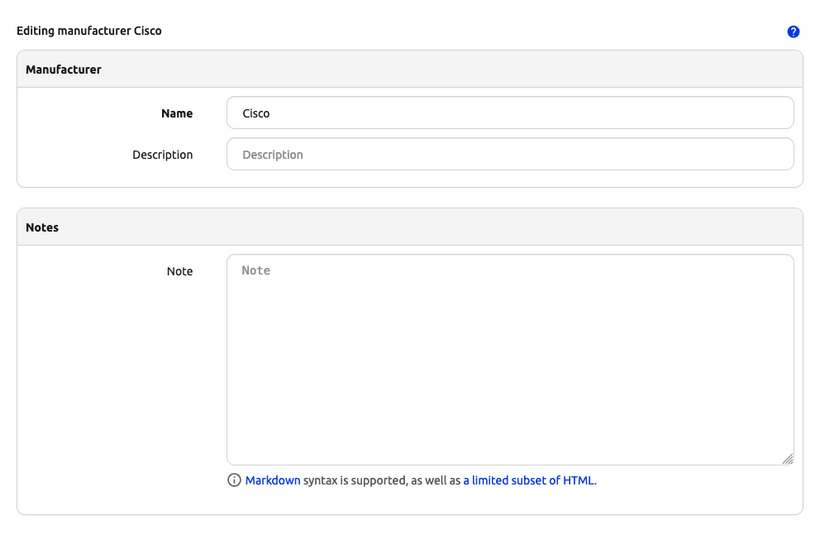
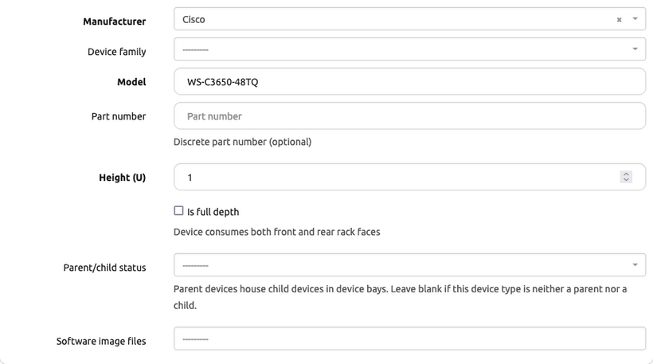
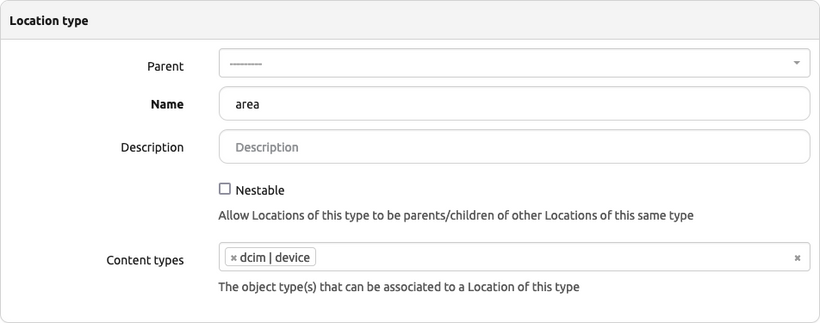
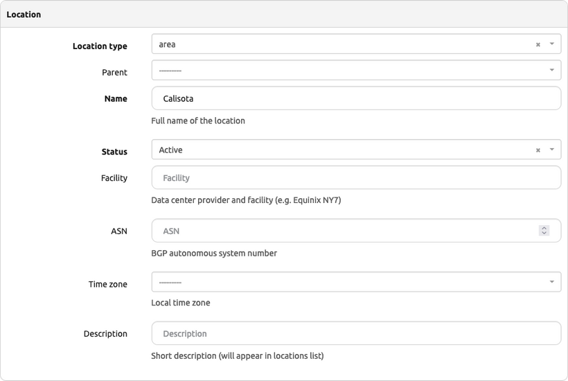
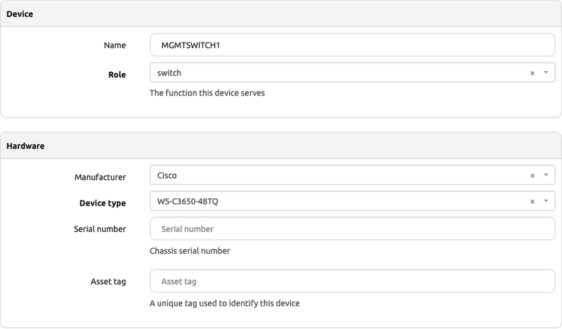
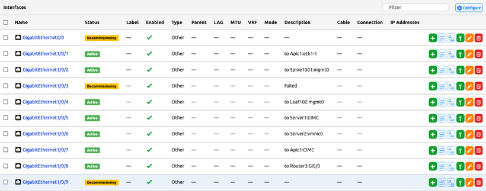

Populating our SSOT with Automation¶

Now, we need to populate our Single Source of Truth (SSOT). Manually adding interfaces for each device is impractical. Hence, automating this process by reading device configurations and creating corresponding SSOT objects is essential.
Currently, there's no official system for automatic device discovery. This led me to develop NetDoc years ago, though it's currently exclusive to Netbox.
Let's create a simple automation to efficiently handle this task.
Tools We'll Use:
- Netmiko for device connectivity and information retrieval.
- NTC Templates to parse information into structured data.
- Nautobot’s REST API to create SSOT objects.
Assuming the device is manually created in our SSOT for convenience, our automation will focus solely on populating interfaces.
Let's proceed step-by-step to develop our automation.
Parameters Needed for Our Automation¶
Our automation requires the following parameters to function effectively:
nautobot_base_url: The URL to access Nautobot.nautobot_apikey: The API key for making REST API requests to Nautobot.host: The IP address of the physical device to be read.username: The username used to access the physical device.password: The password used to access the physical device.
You can create the API key on Nautobot by navigating to User → Profile → API Tokens → Add a token.

In the example script, some parameters are interactively read while others are statically defined within the code. Please note, this script serves as a simple example and should not be used securely in production environments.
Connecting to the device and retrieving information¶
Next, we need to establish a connection to the device and retrieve necessary information. In this example, let's assume the device is a Cisco IOS XE switch, and the required data can be obtained using the following two commands:
show version: to retrieve the device hostname.show interfaces: to retrieve all configured interfaces and any additional parameters.
with ConnectHandler(**data) as net_connect:
show_version = net_connect.send_command("show version", use_textfsm=True)
show_interfaces = net_connect.send_command("show interfaces", use_textfsm=True)
The use_textfsm parameter allows us to immediately transform the human-readable output into structured data. This transformation (parsing) is performed using the Google TextFSM library and NTC Templates.
Processing retrieved data¶
Now that we have obtained the data we need in a structured format, our next step is to clean it up and extract only the following parameters:
- Hostname (standardized to uppercase).
- Interface name, description, and link status.
device_name = show_version[0]["hostname"].upper()
device_interfaces = {
item["interface"]: {
"description": item["description"],
"status": "Active" if item["link_status"] == "up" else "Decommissioning",
}
for item in show_interfaces
}
Updating data on Nautobot¶
We are now ready to update the data on Nautobot. To do this, we need to:
- Retrieve the device ID by its name. Let's assume the device has already been manually created within Nautobot.
- Add interfaces associated with the device only if they do not already exist.
First, let's make a call to retrieve all devices by filtering their name:
# Ingesting data to Nautobot
headers = {
"Authorization": f"Token {nautobot_apikey}",
"Accept": "application/json",
}
# Get device ID
url = f"{nautobot_base_url}/api/dcim/devices/?name={device_name}"
req = requests.get(url, headers=headers, timeout=30).json()
if req["count"] < 1:
raise ValueError(f"{device_name} not found")
device_id = req["results"][0]["id"]
If the device exists, we use the device_id to retrieve interfaces associated with this device. If the interface does not exist, we create it:
# Ingesting data to Nautobot
headers = {
"Authorization": f"Token {nautobot_apikey}",
"Accept": "application/json",
}
# Get device ID
url = f"{nautobot_base_url}/api/dcim/devices/?name={device_name}"
req = requests.get(url, headers=headers, timeout=30).json()
if req["count"] < 1:
raise ValueError(f"{device_name} not found")
device_id = req["results"][0]["id"]
In both cases, we assume that Nautobot's structure does not allow multiple devices with the same name or multiple interfaces with the same name within the same device.
Preparing to Execute the Script¶
Before running the script, we need to create the device on Nautobot. Here's the step-by-step process.
Create a Device Role: navigate to Organization → Roles → Add, with Content Type = dcim|device:

Create a Manufacturer: go to Devices → Manufacturers → Add:

Create a Device Type: in Devices → Device Type → Add, associate it with the previously created Manufacturer:

Create a Location Type: set up a Location Type in Organization → Location Type → Add, with Content Type = dcim|device:

Create a Location: add a Location in Organization → Locations → Add, associating it with the previously created Location Type:

Create the Device: finally, in
, associate the Device Role, Device Type, and Location, using the hostname in uppercase:

Running the Script¶
Now, we can execute the script. If everything works correctly, the device on Nautobot will be populated with all its interfaces:

This process ensures that the device is properly set up within Nautobot before proceeding with the automation script to populate its interfaces.
The script can be downloaded from GitHub.